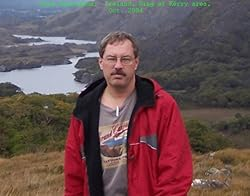
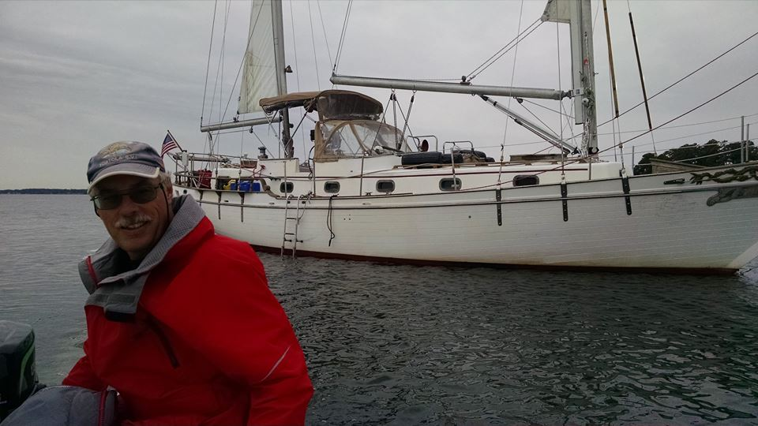
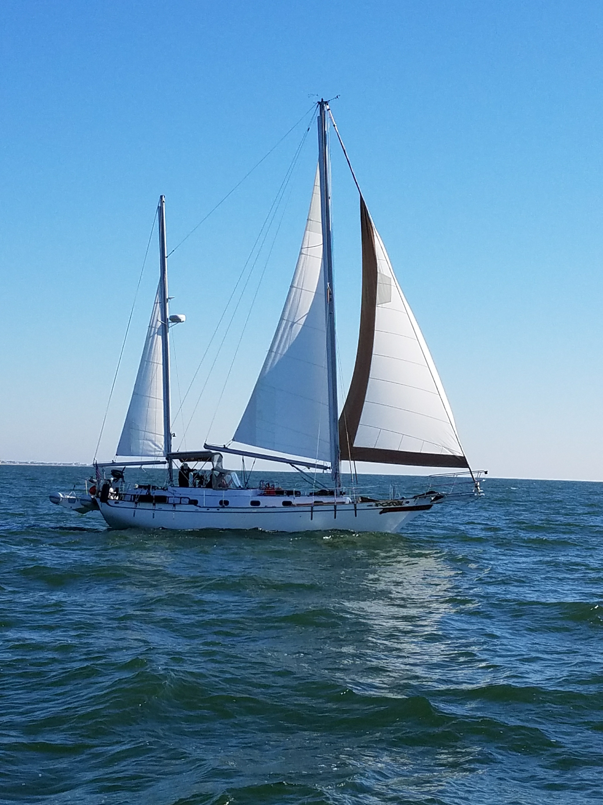

Rick Donaldson, Ring of Kerry, Ireland
Rick was born in Detroit, Michigan. He graduated from Edwin Denby H.S., at the time, one of the top high schools in the city.
In 1975 during High School, he met his wife-to-be, JoAnne. They started dating after he left High School in January 1976. October of 1976 he entered the United States Air Force, attended technical training as a Ground Radio Communications Equipment Repairman at Keesler, AFB, Mississippi and graduated in record time. JoAnne and Rick were married in August 1977. One year later, their first child was born. (Rick attended several colleges throughout the years, including the University of Maryland, and National American University).
Rick's first assignment was to the 3rd Combat Communications Group at Tinker, AFB Oklahoma where he traveled to many places in the world, some he still can not talk about today. One such place was Egypt where he supervised ground communications support in the wait for the release of the hostages from Iran in 1980. Many long months were spent in a secret location in the Sahara Desert.
In April 1982, Rick became a part of one of the largest and most important communications organizations in the world, the White House Communications Agency. His job there was as a Senior Radio Technician coordinating and installing communications systems that traveled around the US and the world in support of the President of the United States, Vice President and several others including former Presidents and First Ladies. He managed to meet each of the, then living Presidents and former Presidents, at least once, and traveled with each one on various trips.
Rick, JoAnne and family decided to leave the active service in 1989, joined the USAF Reserves and moved to Colorado Springs, where Rick eventually also began a teaching career. He stayed with that for six years, deciding it was time to return to the field of electronics and hands-on work, rather than hiding out in the classroom. After several jobs back in the real-world of electronics, Rick has settled back into computers for his day to day living at an Air Force Base as a contractor and acted as a computer systems administrator for the Missile Defense Agency. Later he joined the Electronics Security Systems group as a hardware engineer where he assisted in design, building, implementation, testing and maintenance of the MDA Electronics System System.
He keeps his hands in radio, almost daily as a ham radio operator (call sign NØNJY) and is occasionally active as a Skywarn trained observer. JoAnne (KBØIRW), who is also a ham and Skywarn trained. Rick and JoAnne, when active in Colorado used to do storm spotting every summer in the Colorado Springs area, and still actively chase when they can.
Today, Rick and JoAnne are retired living aboard the sailing ketch Adventure, which usually can be spotted around the Cape Fear River, Atlantic Ocean near the Carolinas and surrounding areas.
Rick has published several articles on politics, the local school system and interviews with some famous software producers. He has published books including “Basic Survival and Communications Skills in the Aftermath” and “Children of the Aftermath: Estrellita Chronicles”, the first book in a series. He writes mostly for web publications now, when requested. Rick and JoAnne retired in 2015 and currently live aboard the Sailing Ketch "Adventure".

Rick and s/v Adventure (Image by Kurt Seastead of "s/v Lo-Kee")

"Adventure" (image by Captain Jay Beard of "s/v Knot Working")
About Rick Donaldson
Rick is a writer and is the author of "Basic Survival and Communications Skills in the Aftermath" and the Science Fiction novel (first in a series) "Children of the Aftermath: Estrellita Chronicles".
He is a retired Non-Commissioned Officer having served twenty-six years in the United States Air Force in Combat Communications, the White House Communications Agency and as the Communications Flight chief for the 302nd Tactical Airlift Wing, as well as serving in the Missile Defense Agency as a Electronic Security Systems Engineer for just over eighteen years.
Having been a communicator, military trainer, college teacher and contractor, he worked with his family over the last 40 years to develop survival skills in the children and now the grand children, spouses and other family and friends. Rick has traveled extensively having visited approximately fifty countries, including islands in the South Pacific, Caribbean, and five continents.
Rick and his wife, JoAnne, currently live aboard their Sailing Ketch, "Adventure". When not traveling on the ship, they hang around Southport, NC preparing for their next adventure.
Rick's hobbies include Sailing, Seamanship skills, Amateur Radio, Amateur Astronomy, building and shooting bows and arrows, weapons marksmanship, hiking, sword fighting, brewing beer and mead and writing short stories, blog entries and novels.
Rick does not consider himself to be "an expert" in all forms of survival but has a "Jack-of-All-Trades" knowledge in many fields. He believes that being an expert in only one field of experience is limiting to the individual, while having even some small knowledge in many fields, however rudimentary that knowledge might be is more helpful.